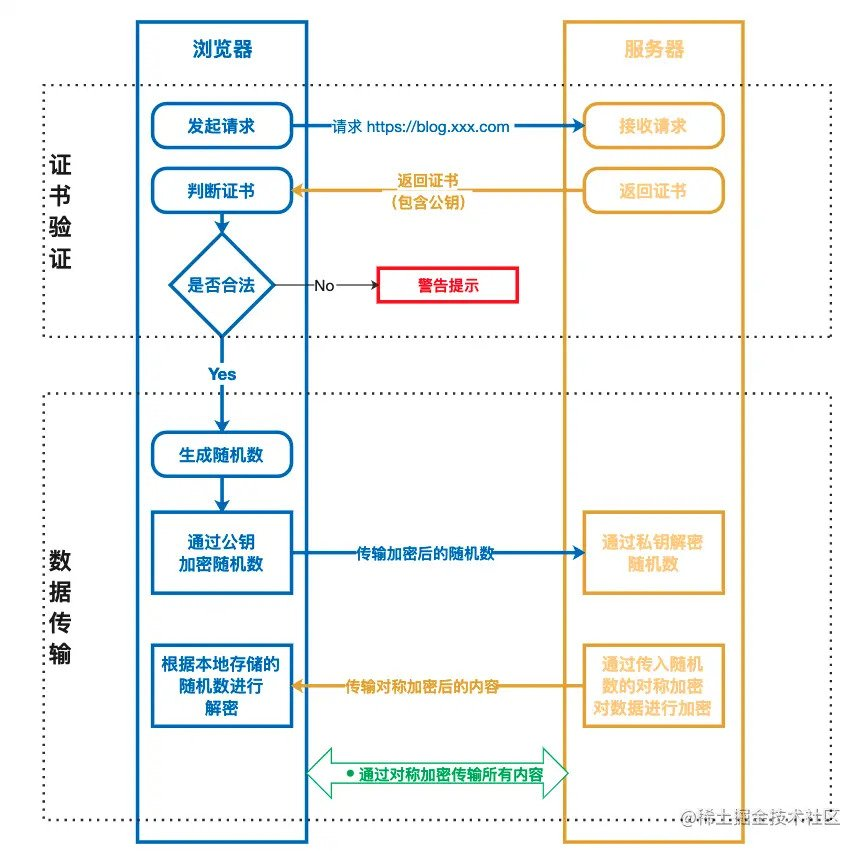
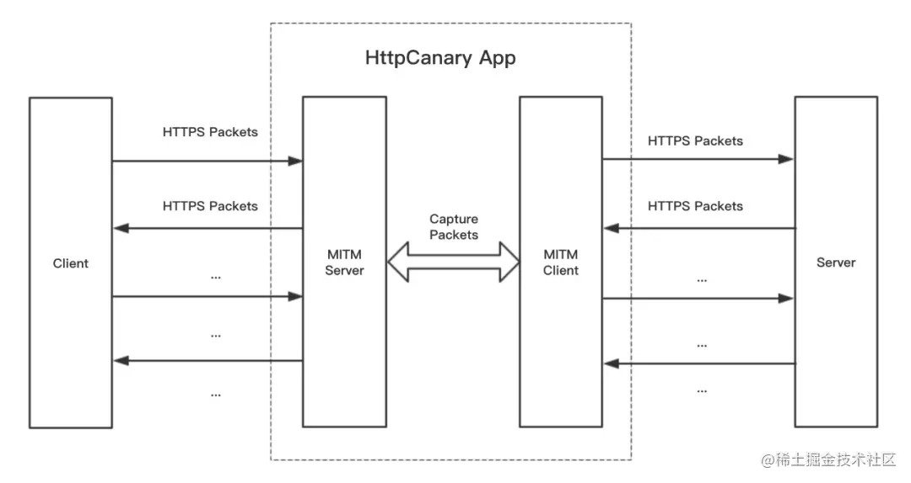

App抓包原理及SSL Pinning绕过
1、HTTPS工作原理及简介

2、HTTPS抓包原理(中间人攻击)
我们熟悉的 Fiddler、Charles 和 HttpCanary App 等抓包工具，其实都是采用了中间人攻击（Man-in-the-MiddleAttack，MITM）的方案： 将客户端的网络流量代理到 MITM 主机，再通过一系列的面板或工具将网络请求结构化地呈现出来。
如果拦截的是 HTTP 请求还好说，要是拦截的是 HTTPS 请求，首先就遇到第一个问题
—— 加密：
加密： 由于 HTTPS 通信中对称密钥 Master Secret 只有通信双方才持有，MITM 无法解密密文，导致在抓包工具上也只能看到一堆无意义的乱码。
要解决这个问题，只能想办法让 MITM 也获得这个对称密钥。此时，MITM 不仅要做流量拦截，还需要伪装成真实的客户端和服务端，与真实的通信双方分别建立独立的连接。我们来看下在中间人攻击下，HTTPS 的三阶段：
连接 1：客户端与中间人的 HTTPS 连接：
CA 证书校验： 客户端与 MITM 握手，MITM 返回一个 “调包” 的 CA 证书（为了让客户端验证 CA 证书通过，需要提前在系统上安装 MITM 的证书）；
密钥协商： 客户端和 MITM 基于 “调包” 的公钥和私钥进行非对称加密通信，协商获得对称密钥；
数据传输： 客户端和 MITM 基于协商的对称密钥进行对称加密通信，此时 MITM 就可以解密出明文。
连接 2：中间人与服务端的 HTTPS 连接：
CA 证书校验： MITM 与 服务端握手，服务端返回 CA 证书，由于服务端证书本来就是合法的，因此 MITM 可以拿到服务端公钥；
密钥协商： MITM 和服务端分别基于公钥和私钥进行非对称加密通信，协商获得 Master Secret 对称加密私钥；
数据传输： MITM 和服务端基于协商的对称密钥进行对称加密通信。

3、SSL Pinning
SSL Pinning是一种防止中间人攻击的技术，主要机制是客户端发起请求->收到服务器发来的证书进行校验，如果收到的证书不被客户端信任，就直接断开连接不继续请求。
MITM中间人攻击要点就是伪造了一个假的服务端证书给了客户端，客户端误以为真。解决思路就是将客户端app内也预置一份服务端证书进行比较。
SSL-Pinning校验方式：
1、 证书锁定
需要在客户端代码内置仅接受指定域名的证书，而不接受操作系统或浏览器内置的CA根证书对应的任何证书，通过
这种授权方式，保障了App与服务端通信的唯一性和安全性，因此客户端和服务端之间的通信是可以保证绝对安全。
但CA证书签发都存在有效期问题，缺点是证书续期后需要将证书重新内置到App中
2、公钥锁定
提取证书中的公钥并内置到客户端中，通过与服务器对比公钥值来验证连接的正确性。制作证书秘钥时，公钥在证
书的续期前后都可以保持不变(即秘钥对不变)，所以可以避免证书有效期问题，比较推荐。
4、SSL-Pinning 绕过方案
1、方案1(不需要root)
修改原有app smali代码。
思路：
反编译apk,找到校验证书方法,改变返回值。再编译apk，抓包。
public void checkClientTrusted(X509Certificate[] ...){...}
public void checkServerTrusted(X509Certificate[] ...){...}
利用条件：
客户端app内未做签名校验。
2、方案2(需要root)
Xposed+JustTrustMe绕过
JustTrustMe简介:
JustTrustMe一个用来禁用、绕过SSL证书校验的基于XPosed模块。原理就是将APK中所有用于校验SSL证书的API
都进行了Hook，从而绕过检测。
3、方案3
Frida绕过
4、特殊情况
1、淘宝
spdy协议
2、抖音
SSL_CTX_set_custom_verify